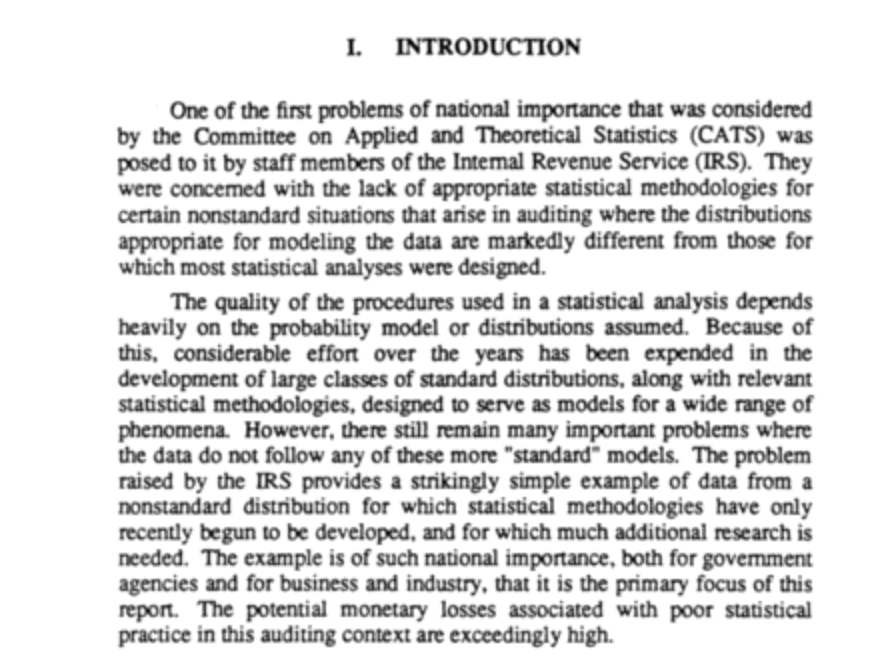

Nonparametric tests and confidence bounds with applications to auditing
Contents
Nonparametric tests and confidence bounds with applications to auditing¶
The problem
National Academies Panel on Nonstandard Mixtures of Distributions (1988)

The need for a priori bounds
Confidence sets derived from the Binomial
Bounds based on concentration inequalities for the mean
Tests based on martingales and supermartingales
Ville’s inequality and supermartingale tests
The SPRT for sampling without replacement
Collected references¶
Anderson, T.W., 1969. Confidence limits for the value of an arbitrary bounded random variable with a continuous distribution function. Bulletin of The International and Statistical Institute 43, 249-251.
Bickel, P.J., 1992. Inference and Auditing: The Stringer Bound, International Statistical Review, 60, 197-209 https://www.jstor.org/stable/1403650
Breth, M., 1976. Non-parametric confidence intervals for a mean using censored data. J. Roy. Statist. Soc. B 38, 251-254.
Breth, M., J.S. Maritz, and E.J. Williams, 1978. On distribution-free lower confidence limits for the mean of a nonnegative random variable. Biometrika 65, 529-534.
Edwards, D., D. Gilliland, G. Ward-Besser, and J. Lasecki, 2015. Conservative Penny Sampling, Journal of Survey Statistics and Methodology, 3, 504-523, https://doi.org/10.1093/jssam/smv025
Howard, S., A. Ramdas, J. McAuliffe, and J. Sekhon, 2021. Time-uniform, nonparametric, nonasymptotic confidence sequences, Annals of Statistics, 49(2): 1055-1080 DOI: 10.1214/20-AOS1991
Kaplan, H.M., 1987. A Method of One-sided Nonparametric Inference for the Mean of a Nonnegative Population, The American Statistician, 41:2, 157-158, DOI: 10.1080/00031305.1987.10475470
Gaffke, N., (unknown date), Three test statistics for a nonparametric one-sided hypothesis on the mean of a nonnegative variable, https://www.math.uni-magdeburg.de/institute/imst/ag_gaffke/files/pp1304.pdf
Hoeffding, W., 1963. Probability Inequalities for Sums of Bounded Random Variables. Journal of the American Statistical Association, 58(301), 13-30. https://doi.org/10.2307/2282952
Learned-Miller, E., and P.S. Thomas, 2019. A New Confidence Interval for the Mean of a Bounded Random Variable https://arxiv.org/abs/1905.06208
Luczak, T., K. Mieczkowska, and M. Sileikis, 2016. On Maximal Tail Probability of Sums of Nonnegative, Independent, and Identically Distributed Random Variables,
Maurer, A., and M. Pontil, 2009. Empirical Bernstein Bounds and Sample-Variance Penalization, COLT
Panel on Nonstandard Mixtures of Distributions, 1988. Statistical Models and Analysis in Auditing A Study of Statistical Models and Methods for Analyzing Nonstandard Mixtures of Distributions in Auditing, National Academies Press. https://nap.nationalacademies.org/initiative/panel-on-nonstandard-mixtures-of-distributions
Phan, M., P.S. Thomas, and E. Learned-Miller, 2021. Towards practical mean bounds for small samples. https://arxiv.org/abs/2106.03163
Serfling, R.J., 1974. Probability Inequalities for the Sum in Sampling without Replacement. Ann. Statist. 2, 39-48, https://doi.org/10.1214/aos/1176342611
Stark, P.B., 2009. Risk-Limiting Postelection Audits: Conservative \(P\)-Values From Common Probability Inequalities, IEEE Transactions on Information Forensics and Security, 4, 1005-1014, doi: 10.1109/TIFS.2009.2034190
Stark, P.B., 2022. ALPHA: Audit that Learns from Previously Hand-Audited Ballots, https://arxiv.org/abs/2201.02707
Wang, and Zhao, 2003. Nonparametric tests for the mean of a non-negative population. J. Statist. Plann. Inference, 110, 75-96.
Waudby-Smith,l I. and A. Ramdas, 2021. Confidence sequences for sampling without replacement, https://arxiv.org/pdf/2006.04347.pdf
Waudby-Smith, I., and A. Ramdas, 2021. Estimating Means of Bounded Random Variables by Betting, https://arxiv.org/pdf/2010.09686.pdf
Waudby-Smith, I., P.B. Stark, and A. Ramdas, 2021. RiLACS: Risk-Limiting Audits via Confidence Sequences, in Electronic Voting. E-Vote-ID 2021. Lecture Notes in Computer Science, 12900. Springer, Cham. https://doi.org/10.1007/978-3-030-86942-7_9